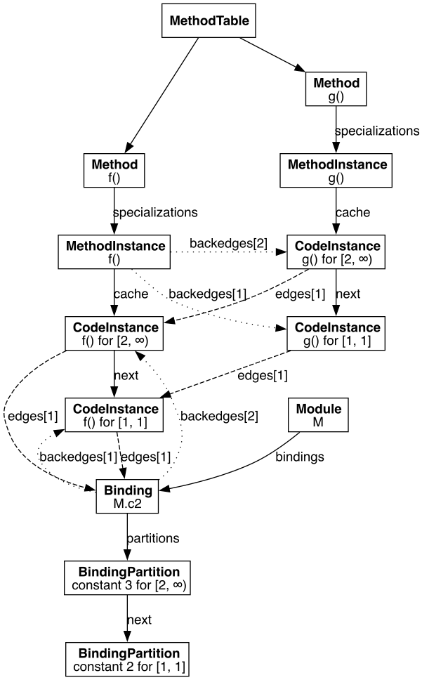
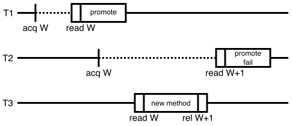

Proper maintenance and care of multi-threading locks
コードがデッドロックしないようにするため、以下の方針を採用します（一般には、Coffmanの第4条件である循環待ちに対処します）。
- 一度に取得する必要があるロックが1つだけになるようにコードを構成する
- 以下の表に示す順序で、共有ロックを常に同じ順序で取得する
- 制限のない再帰が必要になると想定される構造は避ける
Types of locks
uv_mutex_t（またはstd::mutex）は、プラットフォーム固有のロック（Unixではpthread_mutex_t、WindowsではCRITICAL_SECTION）をラップするものです。現在のOSスレッドをブロックすることがあり、再入可能ではなく、セーフポイントでもありません。
jl_mutex_tは再入可能なスピンロックです。tryブロック内で取得したjl_mutex_tは、ブロックの末尾に到達した場合も、例外を捕捉した場合も、ブロックを抜けるときに解除されます。JL_LOCK/JL_UNLOCKはセーフポイントですが、JL_LOCK_NOGC/JL_UNLOCK_NOGCはセーフポイントではありません。jl_mutex_tを保持したままタスクを切り替えてはいけません。
Lock hierarchy
以下に、システム内に存在するすべてのロックと、デッドロックの可能性を避けるための使用方法を示します（ここでは「ダチョウアルゴリズム」は認められません）。デッドロックを避けるための規則が特別に定められている場合を除き、低いレベルのロックから高いレベルのロックを取得してはいけません。
Level 1
これらのロックのいずれかを保持している間は、ほかのロックを取得できません。そのため、コード内でメモリを割り当てたり、セーフポイントに到達したりしてはいけません。メモリ割り当て、GCの有効化・無効化、例外フレームの開始・復元、ロックの取得・解放ではセーフポイントが発生することに注意してください。
safepoint_lock（uv_mutex_t）shared_map_lock.mtx（uv_mutex_t）finalizers_lock（jl_mutex_t）gc_pages_lock（uv_mutex_t）gc_perm_lock（uv_mutex_t）gc_queue_observer_lock（uv_mutex_t）gc_threads_lock（uv_mutex_t）flisp_lock（uv_mutex_t）ResourcePool<?>.mutex（std::mutex）RLST_mutex（std::mutex）llvm_printing_mutex（std::mutex）jl_locked_stream.mutex（std::mutex）debuginfo_asyncsafe（uv_rwlock_t）（jl_in_stackwalk（uv_mutex_t、Win32のみ）は引き続き取得可能）profile_show_peek_cond_lock（jl_mutex_t）trampoline_lock（uv_mutex_t）bt_data_prof_lock（uv_mutex_t）jl_ptls_t.sleep_lock（uv_mutex_t）tls_lock（uv_mutex_t）page_profile_lock（uv_mutex_t）symtab_lock（uv_mutex_t）engine_lock（std::mutex）
Level 2
global_roots_lockjl_module_t.locknewly_inferred_mutexJLDebuginfoPlugin.PluginMutex（std::mutex）precompile_field_replace_locklive_tasks_lock（uv_mutex_t）heapsnapshot_lockjitlockjl_safepoint_suspend_all_threadsおよびjl_safepoint_resume_all_threads
Level 3
jl_method_t.writelocktypecache_locklibmap_lock
Level 4
jl_methcache_t.writelock
Level 5
jl_methtable_t.writelock
Level 6
この位置より上のロックを保持している間は、Juliaコードを呼び出してはいけません。
world_counter_lockjl_typeinf_lock
Level 7
JuliaOJIT::EmissionMutex（std::recursive_mutex）jl_modules_mutexjl_uv_mutex（Juliaではiolockとして知られています）個々の
ThreadSynchronizerロックLibdl.LazyLibrary.lock（ReentrantLock）orc::ThreadSafeContextcfun_lock
Level 8
precomp_statement_out_lockdispatch_statement_out_lock
Exceptions to the lock hierarchy
通常、すでに保持しているロックと同じレベルのロックを取得することは禁止されています。ただし、以下のケースでは、同じレベルのロックを取得するための特別なプロトコルを使用します。
jl_method_t.writelock無効化処理では、バックエッジを深さ優先探索する間に、各メソッドのロックを取得します。デッドロックを避けるには、複数の
jl_method_t.writelockを取得する前に、world_counter_lockをすでに保持していなければなりません。
Broken locks
以下のロックは壊れています。
loading.jl:requireおよびregister_root_moduleこのファイルには多数の問題がある可能性があります。（修正方法: ロックが必要）
Updates to the world counter
world ageの仕組みにより、Juliaではメソッドとバインディングの両方を置き換えながら、最適化しやすい状態を保てます。コンパイル済みの各CodeInstanceには、有効なワールドエイジの範囲があります。ワールドエイジが増加したら、すべてのCIが古くなったと保守的に仮定することもできます。しかし、不要な再コンパイルを避けるため、依存関係（「エッジ」と呼びます）を追跡し、次の不変条件を維持します。
公開済みの各CodeInstanceについて、次のいずれかが成り立ちます。
min_worldとmax_worldが有限であり、その範囲内のすべてのワールドでCIが有効である。max_worldが∞（-1）であり、このCIが無効化可能な状態にある。つまり、すべてのフォワードエッジについて、次の条件が成り立つ。そのエッジが、このCIから呼び出される、またはこのCIにインライン展開される
CodeInstanceである場合、そのエッジのMethodInstancebackedge配列に、逆方向を指すエントリがある。そのエッジが
Bindingである場合:- バインディングが別のモジュールにある場合、その
backedges配列に、このCIを指すエントリがある。 - バインディングが同じモジュールにある場合、このCIの
Methodが、モジュールのscanned_methods配列にある。
- バインディングが別のモジュールにある場合、その
たとえば、次のコードは別のモジュールの定数を置き換え、無効化の連鎖を引き起こします。
const c1 = 1
module M const c2 = 2 end
f() = getfield(M, :c2)
g() = f() + c1
g() # compile g
@eval M const c2 = 3 # invalidate f, g
g() # recompile gg()の2つのバージョンをコンパイルすると、グローバルキャッシュは次のようになります。

最大ワールドエイジjl_world_counterは、world_counter_lockによって保護されています。Juliaでは、world_counter_lockを保持せずに型推論を行えるよう、楽観的並行性制御の一種を使用しています。
新しいメソッドまたはバインディングの公開は、次の手順で行います。
world_counter_lockを取得する。jl_world_counterを緩和順序でロードし、その値をnew_world = jl_world_counter + 1とする。- ワールド範囲
[new_world, ∞)で、新しいバインディングのパーティションまたはメソッドテーブルのエントリを公開する。この手順については、lock free data structuresのセクションで説明します。 new_worldをjl_world_counterにリリースストアする。world_counter_lockを解放する。
型推論は次のように進みます。
jl_world_counterを取得順序でロードする（これをvalidation_worldと呼ぶ）。そのワールドで型推論を行い、ロックフリーのデータ構造を使って、そのワールドのバインディングとメソッドテーブルを読み取る。
推論された各
CodeInstanceについて、バックエッジを保存する。- 非ローカルバインディングの場合、バインディングが属するモジュールのロックを取得する。
- CIの場合、メソッドのロックを取得する。
world_counter_lockを取得する。jl_world_counterを緩和順序でロードし、validation_worldと比較する。- 値が異なる場合、推論されたCIの有効なワールド範囲は変更しない。
- 値が同じ場合、楽観的な見込みが当たったことになる。
validation_worldで有効な推論済みCIをすべて[validation_world, ∞)に昇格し、無効化にはバックエッジを利用できる。
world_counter_lockを解放する。

上の図では、スレッド1と2が型推論（点線）を行い、スレッド3が新しいメソッドを有効化しています。実線のボックスは、world_counter_lockを保持しているクリティカルセクションを表します。acq、rel、readは、それぞれ取得ロード、リリースストア、緩和順序のロードです。
T1は間に合ってCIを昇格させますが、T2は時間がかかりすぎ、T3が新しいメソッドの公開とワールドカウンターのインクリメントを終えるまで、world_counter_lockでブロックされます。T2はW+1を読み取り、CIの昇格に失敗するため、最大ワールドがWのままになります。
Lock free data structures
TODO